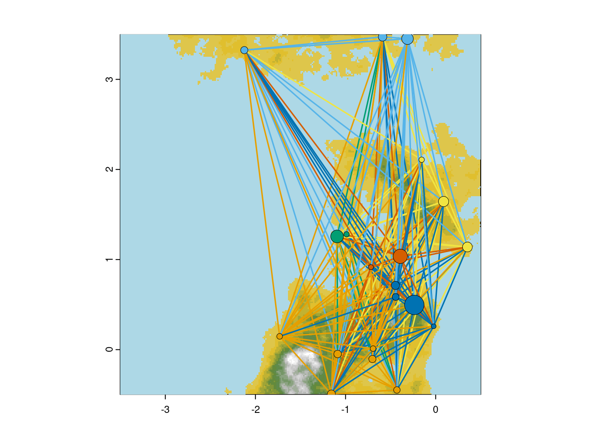

4 Migration & Conflict
4.1 Fission
Although the protocol described in the previous chapter tends to keep the population of a site close to its carrying capacity, it often happens that the population size still exceeds the carrying capacity. When this occurs, the surplus individuals have the opportunity to migrate and establish a new settlement. This process is influenced by two culture-dependent parameters:
+ minimals: This defines the minimum number of individuals, in relation to the carrying capacity, needed to create a new settlement.
+ prob_split: This defines the probability that, given the minimum number of individuals is reached, the group will actually fission and relocate.
When this occurs, the group will search for a suitable location to relocate. The selection of this space depends on its availability, its proximity to the original settlement, and the resources available at the new location.
The criteria for available space are determined by areas on the map that are neither too elevated, submerged in water, nor within the vicinity of pre-existing settlements. This proximity range is also culture-dependent, reflecting differences in mobility and the population size of the settlement. The latter reflects the settlement’s capability to dispatch individuals to defend its territory and its increasing need for resources.
A friction surface is created once all available spaces have been identified. This surface determines the probability of moving to any square of the raster. This probability is defined as a function of the distance from the original settlement and the availability of resources.
To achieve this we create a friction surface using a logistic decay function defined as: \[ \text{logdec}(ds,k,L) = L - \frac{L}{1 + e^{-k(ds - x_0)}} \]
where:
- \(L\): The maximum value, set as one to give a probability
- \(k\): Growth rate, here set as 0.0001
- \(ds\): raster representing the distance to the focal settlement
- \(x_0\): The midpoint of the logistic function, set as 20000, ie 20km from the origin, modulated by cult_ext, a culture-dependent parameters reflecting the technological abilities of the culture to move.
We then combine this first friction surface with the resource raster to compute another friction map representing weighted average probability, where the distance to origin accounts for 70% of the final probability and available resources 30%.
This final friction surface can be summarised as: \[ w = \frac{0.7 \cdot d_2 + 0.3 \cdot \text{ressources}}{0.7 \cdot \text{max}(d_2) + 0.3 \cdot \text{max}(\text{ressources})} \]
where:
- \(d_2\) is the result of the logistic decay function applied to a given site and its parameters.
ressourcesrepresents available resources.max() returns the maximal value of a raster, to normalise value as probabilities (it’s implemented byterra::minmax()function)
When a site position is chosen, a new settlement is created, using the functions described in the previous chapter to generate the carrying capacity of the new settlement and its new population structure
This is wrapped within the function run_simulation, which will be described in detail in the next chapter. Here is a simplified version of the section of the code that handles these migration events:
migrants <- newN - round(Ks[[s]]*0.9) #possible migrants,
new_site <- NULL
tmp <- Nts[i-1,]
tmp[Nts[i,] > 0] <- Nts[i, Nts[i,] > 0]
havemoved <- F
if (migrants >= (minimals[sites$culture[s]]*sites$Ks[s]) & runif(1)<prob_split[sites$culture[s]] ){
#if supopulation > 10 people, 10% chance of creation of a new city
#mean of area of influence
infarea <- (sqrt(tmp)+penal_cul[cultures]) * buffersettl
buffersize <- rnorm(length(infarea), infarea, infarea * 0.1)
buffersize[tmp==0] <- 0.00001
territory <- erase(viable, buffer(sites, buffersize))
if( length(territory)>0 ){
##select a new site given its distance to the old one and the ressourcesource available in ressources
d2 <- logisticdecay( sites[s], dem, x=20000*cul_ext[sites$culture[s]])
w <- (0.7 * d2 + 0.3*ressources) / (0.7*minmax(d2)[2] + 0.3*minmax(ressources)[2])
new_site <- spatSample(
x=mask( w * logisticdecay(sites[s], dem, k=0.00002, x=20000*cul_ext[sites$culture[s]]),territory),
size=1, method="weights", xy=T)[1:2]
new_site <- vect(new_site, geom=c("x","y"))
if ( length(new_site)>0 & all(!is.na(crds(new_site))) ){
##add new site to site listes
Ips[[length(Ips)+1]] <- initpopstruc(n=migrants) #initialise a fake population, will be updated by real migrants later
new_site$culture <- sites$culture[s]
new_site$Ks <- round( initKs(
Kbase, sites=new_site, ressources,
sizeex="F", rate=0.45))
sites <- rbind(sites, new_site)
Ks[length(Ks)+1] <- new_site$Ks
city <- length(Ips)
Nts <- cbind(Nts, rep(0,ts+1))
Nts[i, city] <- migrants
cultures <- c(cultures, cultures[s])
havemoved <- T
}
if( havemoved ){
Ips[c(s,city)] <- changePopSize(loosingPop=Ips[[s]], winingPop=Ips[[city]], size=migrants)
newN <- newN - migrants
}
}
}This uses a couple of internal functions, some already described, like:
- initpopstruc
- initKs
and specific ones like:
- changePopSize: Changes population size by moving population from one site to another; or remove a group of people.
4.2 Migration
If the fission event fails, people will then move to another settlement. The choice of the new settlement is based on a combination of the distance to the new settlement, its ‘available space’, which corresponds to how far from the carrying capacity the population will be once the migrant population moves in, and the resources available at this site. Each settlement is assigned a probability, given these elements, used to randomly choose the site of migration, following this equation:
\[ \text{attractivity} = \frac{e^{\left(\text{resources} \times \text{space} \times \log(\text{distance})\right)} }{ \sum \exp\left(\text{resources} \times \text{space} \times \log(\text{distance})\right)} \]
Here is a simplified version of the actual implementation available in run_simulation:
att <- extract(ressources,sites)[,2]
space <- sites$Ks - (Nts[i-1,] + migrants)
dis <- extract(logisticdecay(sites[s], dem, k=0.00002, x=1), sites)[,2]
attractivity <- att * space * dis
#attractivity=attractivity*(1+10*(sites$culture[s]==sites$culture)) #4 times more likely to go to similar culture
attractivity[s] <- min(attractivity)-1
attractivity <- exp(attractivity)/sum(exp(attractivity))
attractivity[Nts[i-1,]<10] <- 0
attractivity[sites$culture!=sites$culture[s]] <- 0
if(any(is.na(attractivity))) attractivity[is.na(attractivity)] <- 0
city <- sample(size=1, x=seq_along(sites), prob=attractivity)
Nts[i,city] <- Nts[i-1,city] + migrants4.3 Conflict and War
During each time step of the simulation, each settlement may engage in a fight against another settlement. This again, will depend on multiple factor such as the culture of the settlements and their population sizes. Here is a breakdown of how warfare is simulated according to the provided code snippet:
- Identification of Aggressors:
- In the archaeoriddle simulation, only farmers behave aggressively and engage in conflict. Thus, in a given time step, farmer settlements with a population size greater than 50 are identified as potential aggressors (
potentialfighters). From this subset of the farmer’s settlements,10% of them will actually try to engage in warfare.
- In the archaeoriddle simulation, only farmers behave aggressively and engage in conflict. Thus, in a given time step, farmer settlements with a population size greater than 50 are identified as potential aggressors (
- Selecting the Target for Attack:
Settlements within a radius of the aggressor and with a different culture are identified as potential victims. The radius is defined by the parameter
bufferatack. Then:If there is only one clash candidate, that candidate is selected as the target.
If there are multiple candidates, one is randomly selected as the target of the attack.
- Conducting the Battle and Calculating Losses:
- The battle is simulated through the
fightbetterlossfunction, which calculates the new population sizes for both the aggressor and the victim after the conflict. - The casualties from the battle are calculated and used to determine the size of the war event.
- The battle is simulated through the
To calculate who wins and what the losses are, we defined a function called fightbetterloss that simulates a battle between two settlements and calculates their post-conflict population sizes based on their initial population sizes. The outcome of who wins the battle is determined probabilistically, influenced by the relative sizes of each settlement’s population, assuming no significant technological differences.
The battle outcome between two settlements, A and B, is determined by:
\[ P(\text{Victory for A}) = \frac{N_A}{N_A + N_B} \]
where \(N_A\) and \(N_B\) are the population sizes of settlements A and B, respectively. This probability is used to decide who the winner (v) is and who the loser (l) is. The new population sizes of the winner and the loser after the battle are determined by binomial distributions, reflecting the randomness of conflict outcomes:
For the winner (\(v\)): \[ N_{v,\text{new}} = \text{Binomial}\left(n = N_v, p = 1 - \frac{N_l}{N_v + N_l}\right) \]
For the loser (\(l\)): \[ N_{l,\text{new}} = \text{Binomial}\left(n = N_l, p = 1 - \frac{N_v}{N_v + N_l}\right) \]
In these equations, \(N_{v,\text{new}}\) and \(N_{l,\text{new}}\) are the new population sizes for the winner and the loser; \(n\) is the size parameter of the binomial distribution, which is the pre-battle population size; and \(p\) is the success probability of surviving the battle. The success probability for each side inversely depends on the ratio of the opponent’s population size to the total population involved in the conflict, reflecting the idea that the larger the population, the higher the casualties it will inflict, and the lower the casualties it will suffer.
This process incorporates cultural differences, population sizes, and proximity to dictate when and how wars occur between settlements, simulating the nuanced and multifaceted nature of conflict in a simplified manner.
A quick illustration of how the outcome of conflicts between two settlements of varying size:
compare <- do.call("rbind",lapply(seq(10,100,3),function(b)
t(rbind(b/100,replicate(100,c(100,b)-fightbetterloss(c(100,b),1,2))))
))
plot(compare[,1]+runif(100,0,0.01),compare[,2],col=adjustcolor("red",.6),pch=20,main="number of loss",xlab="ratio A/B",ylab="number of loss")
points(compare[,1]+.015+runif(100,0,0.01),compare[,3],col=adjustcolor("blue",.6),pch=20)
legend("topleft",legend=c("loss for A","loss for B"),col=c("red","blue"),pch=20)
cls=heat.colors(length(unique(compare[,1])))
names(cls)=unique(compare[,1])
plot(compare[,2]+runif(100),compare[,3]+runif(100),bg=cls[as.character(compare[,1])],pch=21,ylab="losses for B",xlab="losses for A",xlim=c(0,80),ylim=c(0,80),cex=2)
legend("bottomrigh",legend=names(cls)[seq(1,length(cls),length.out=9)],fill=cls[seq(1,length(cls),length.out=9)],ncol = 3,title="ratio A/B")
abline(a=1,b=1,col="green",lwd=3)Figure 4.1: Simulation run with population A with 100 people, and populaiton B with a growing populatoin size from 10 to 100, represent fraction of population a from 10% to same population size. Noise has been added to visualise alldata
The model generates losses on both sides, but on average, this is smaller for the larger population while still allowing cases where the smaller settlement may win the battle, causing more damage than it receives. These differences are smoothed when the size of the two settlements becomes similar.
Here is a simplified version of the actual implementation available in run_simulation:
potentialfighters <- which(sites$culture=="F" & Nts[i,]>50)
for (s in sample(x=potentialfighters, size=round(length(potentialfighters)*probfight))){
buff <- bufferatack
clash <- whotouch(s, sites, Ne=Nts[i,], buffersize=buff)
if(length(clash)>0 && !is.na(clash)){
if(length(clash) == 1){
attack <- clash
} else {
attack <- sample(clash, 1)
}
newns <- fightbetterloss(Ne=Nts[i,], a=s, b=attack)
casualties <- sum(Nts[i, c(s,attack)] - newns[c(s,attack)])
warcasualties[i] <- casualties
sizew <- casualties^2/4000
warpoints(sites, s, attack, Ne=Nts[i,],
buffersize=buff, sizewar=sizew+0.5,plot=wplot)
#effectively kill people in population (should be done taking into account age pyramid to be more realistic)
Ips[[s]] <- changePopSize(loosingPop=Ips[[s]],
size=(Nts[i,s] - newns[s]))
Ips[[attack]] <- changePopSize(loosingPop=Ips[[attack]],
size=(Nts[i, attack] - newns[attack]))
Nts[i,] <- newns
}
}whotouch: is a central element of the conflict, and it returns the list of sites within the reach of the settlements. A couple of adjustments have been manually made for the original challenge: only farmers attack, and they do so only if they have at least 50 individuals. Among the settlements that have the potential to attack another, they will do so with a probability ofprobfight. This has been set to 0.1 in the original challenge to ensure that settlements do not fight everyone all the time, which was leading to way too much wars.warpoint: is here used to randomly select a point where the two settlements can potentially meet and thus where the conflict happened. It is so far only used to show conflicts on the map, but could be used to deposit evidences of these conflicts.
Here are we define most of the assumptions that will be tested by the research questions proposed in the original challenge described in the Chapter 9.
4.4 DEPRECATED – Network, Site Size And Climate
The following steps were designed but never used. They can be fun and useful.
Create a network between sites (requires igraph)
library(igraph)
subsites <- sites
crs(subsites) <- "+proj=lonlat"
subsites <- sites[sample(nrow(sites), 20), ]
ig <- graph_from_adjacency_matrix(
as.matrix(distance(subsites)), weighted=T, mode="undirected")
ig <- set_graph_attr(ig, "layout", crds(subsites))
V(ig)$label <- ""
V(ig)$size <- (size+1)*5
V(ig)$frame.color <- "black"
V(ig)$frame.width <- .5
E(ig)$weight <- 1/(E(ig)$weight^2)
E(ig)$width <- exp(E(ig)$weight)+.6
allcomu <- cluster_louvain(ig)$memberships[1,]
V(ig)$color <- allcomu
E(ig)$color <- allcomu[head_of(ig,E(ig))]
plot(height.ras, col=col_ramp(20), legend=F, reset=F)
plot(height.wat, col="lightblue", add=T, legend=F)
plot(ig, add=T, rescale=F, alpha=.2)
Visualise sites on the 3D plot
plot_3d(
hm_lamb,height_map, zscale=20, fov=0, theta=20, zoom=1, phi=45,
windowsize=c(1000, 800), water=TRUE, waterdepth=mean(height),
wateralpha=1, watercolor="lightblue", waterlinecolor="lightblue",
waterlinealpha=.7
)
render_points(
extent=raster::extent(raster::raster(height.ras)),
lat=2.13828, long=-1.685547, altitude=extract(height.ras,sites)[,1]+20,
zscale=20, size=1, col=categorical_pal(max(allcomu))[allcomu],
clear_previous=TRUE
)
render_points(
extent=raster::extent(raster::raster(height.ras)),
lat=crds(sites)[,"y"], long=crds(sites)[,"x"], altitude=extract(height.ras, sites)[,1]+20,
zscale=20, size=1, col=categorical_pal(max(allcomu))[allcomu],
clear_previous=TRUE
)
render_highquality(point_radius=5, samples=256, clear=TRUE, light=TRUE)Let’s say the climate modulates site size in a naive way:
for(i in seq(1, tstep, length.out=100)){
layout(matrix(1:2, nrow=2, ncol=1), heights=c(.8, .2))
par(mar=c(1, 2, 2, 1))
image(m, ann=F, axes=F, main=i)
mtext(round(i), 3, 1)
nsize <- size*faketemp[i] + size + 1
points(crds(sites), bg="green", pch=21, cex=nsize)
par(mar=c(2, 2, 0, 1))
plot(
1:tstep, faketemp, type="l", ylab="temp", xlab="time", ylim=range(faketemp),
ann=F, frame.plot=F)
points(i, faketemp[i], col="red", pch=20)
}Population will then grow, for years and years. This implies multiple things: populations need resources and a way to grow given available resources and their own technologies. We initialised the resource layer in the previous chapter in the section about resources. In the following sections, we will use this resource raster to initialise site size and define how the different cultures use resources.